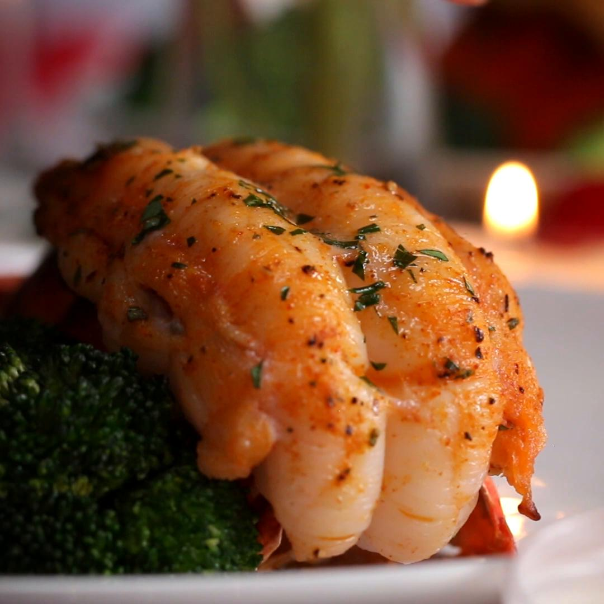

Baked Lobster Tails

Reviews:
- "Perfect date night dinner if you’re looking to stay in!! I cut the cook time down by about 2 mins because I had smaller tails. So good!!! Will try again!" by Aniyah McNeal.
- "This was tooooo good! My boys had eaten all there food before I could even fix my plate and sit down! I made 6 Lobster Tails, garlic mashed potatoes, and 3 cheese garlic bread" by precious159.
- "Unbelievably tasty! Have made several times and they’re always a hit" by lennabobenna.
Credit For the Recipe:
Alvin Zhou from the Tasty Team
Ingredients:
- 8 oz lobster tail, 2 tails
- 3 tablespoons butter, melted
- 1 teaspoon salt
- 1 teaspoon black pepper
- 1 teaspoon garlic powder
- 1 teaspoon paprika
- 1 teaspoon fresh parsley, chopped
- 1 teaspoon lemon juice
- 2 wedges lemon, to serve
- broccoli, cooked, to serve
Steps:
- Using a clean pair of scissors or kitchen shears, cut along the middle of the top of the shell towards the fins of the tail, making sure to cut in a straight line.
Do not cut through the end of the tail.
- Using a spoon, separate the meat from the two sides of the shell, then lift the meat up and out from inside the shell.
- Press the two sides of the shell together, then lay the meat over the seam where the two shells meet.
- If you are having difficulty opening the shell up to lift out the meat, flip the tail over and make cuts along the carapace where the legs meet the bottom part tail.
This will help break the rigid structure of the shell and allow it to be more flexible.
- While cutting through the shell, you may have also cut into the meat, which is perfectly okay. Make a shallow cut through the middle of the lobster meat so that you can peel down the thin layer of meat over the sides.
This gives the lobster tail its signature look.
- Preheat oven to 450°F (230°C).
- In a small bowl, combine the butter, salt, pepper, garlic powder, paprika, lemon juice, and parsley, then brush the mixture evenly over the lobster meat.
- Place the tails onto a baking sheet, then bake for approximately 12-15 minutes, until the lobster is fully cooked but not rubbery.
- Serve with a side of broccoli and a lemon wedge.
- Enjoy!